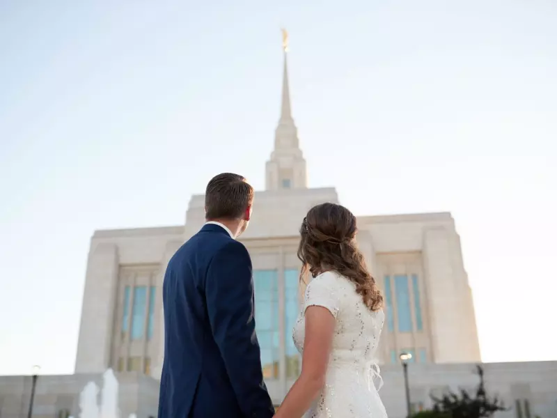
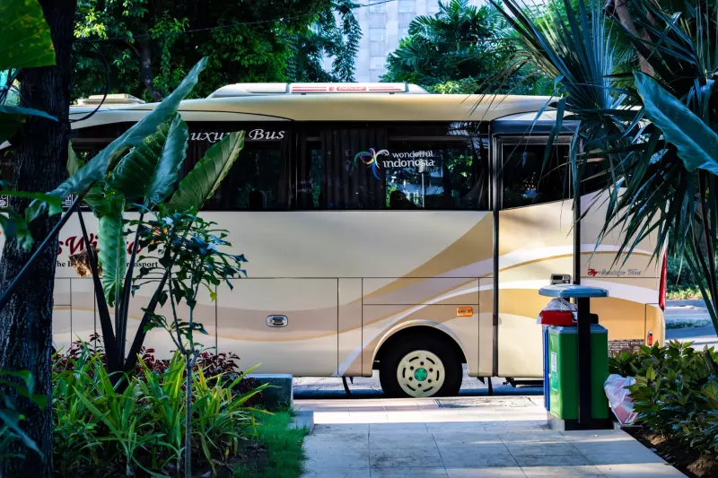

Services & Amenities

Helping Hands
As a full service operation, Temple Inn & Suites provides an array of
accomodations to help make your stay as comfortable as possible.
Whether alone, with family, or as part of a group, you can find rest
from your travels by taking advantage of some of our specialized
services. Our on-site staff is always eager to help, and specially
trained to provide assistance to Temple missionaries and patrons
attending such services as, sealings, weddings, receptions, and young
single adult activites.
Specialty Services
Because we are so acutely attuned to the needs of Temple attendees, we
offer several specialized services that are meant to benefit the needs
of those patrons. Please note that access to the changing rooms is
reserved specifically for patrons that hold a Temple recommend;
however, the remaining services are available to all patrons.
Please consider the following services as you plan your stay at Temple
Inn & Suites.
Wedding Receptions

We provide special accomodations for recently sealed couples wishing
to hold ceremonies or receptions around Temple grounds.
Explore Wedding Receptions
Extended Stay for Temple Missionaries
A selection of extended stay suites are available to Temple
missionaries who may be transitioning into or away from full-time
Temple service.
View Extended Stay Options
Changing Rooms
Changing rooms and bathroom facilities are available to Temple patrons
who are traveling and may need the option to change to and from church
clothes.
Patrons also have the option to recieve Family history consultations
and ordinance card services.
Child Daycare
For those patrons who have young children and would like assistance,
or are unable to find accomodations, we offer low-cost babysitting and
daycare services.
Our daycare center provides a safe and clean environment for children
to learn and play while parents are away. We are contracted with local
and international regulatory agencies who monitor the standards of our
facility to ensure that it meets safety and educational standards of
the UNCSA.
Family History Center
For any patrons interested in learning more about their family
history, we provide a Family History Center. This center has access to
a database with millions of records. Patrons are able to conduct
research at their own pace, or request the assistance of our family
history research team at the reception desk.
A sitting room is also available for patrons to study, relax, or
engage in quiet conversation while they wait for Temple sessions,
conferences, gathering activities, or family members.
Temple History Museum
Our Temple History Museum is set up to provide patrons with a glimpse
into the history of the Church, as well as the history of the
adjoining Temple, including its construction and operation. The
history museum is a wonderful place for members, nonmembers, and
investigators alike. Not only will they learn about the local events
of the Church, but also more about the history of the Church itself,
its founding, growth, theological perspective, and charitable
programs.
Visitors can peruse local church documents, examine artifacts, and
witness various exhibits detailing the experiences of the Saints both
ancient and lattder-day.

Within the history center also resides a small gift shop with a varied
selection of items to fulfill the basic needs of Temple patrons.
Free Amenities
Also available is a selection of free amenities offered to all
patrons.
Temple Shuttle & Parking
